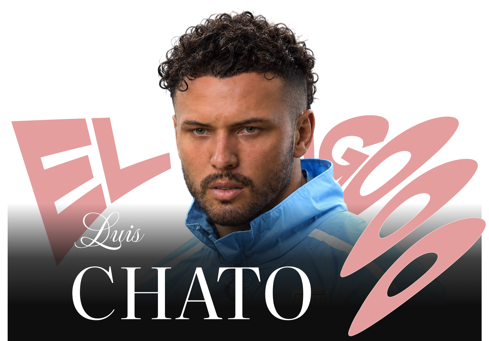
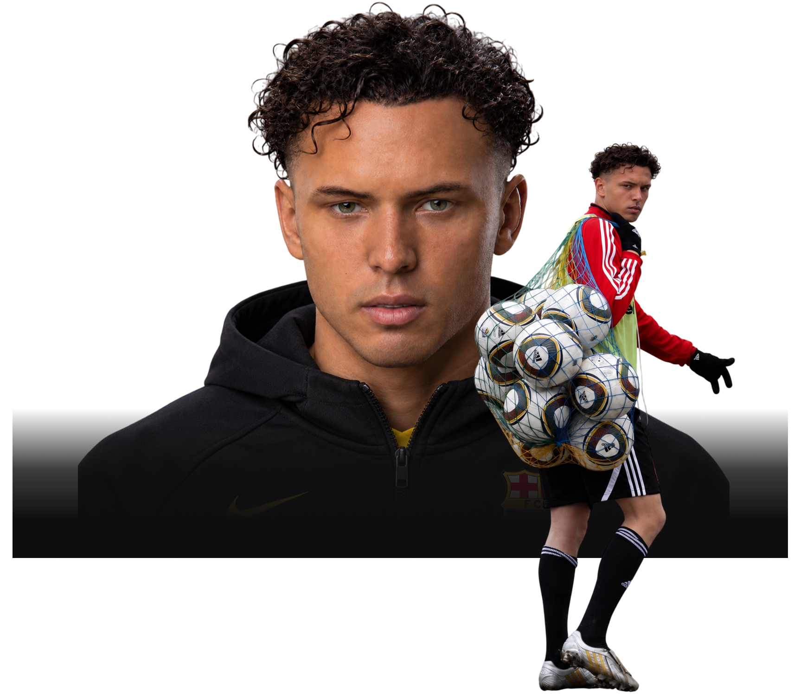
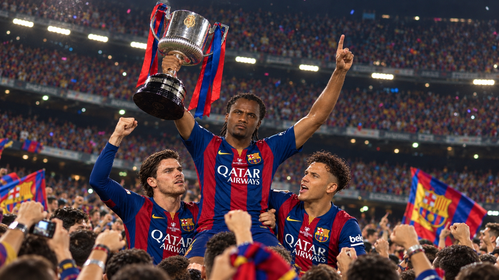
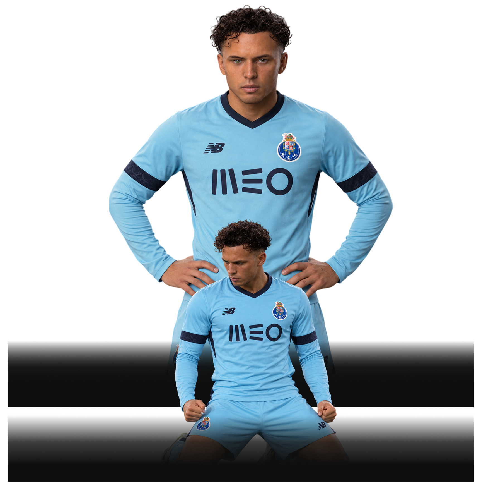
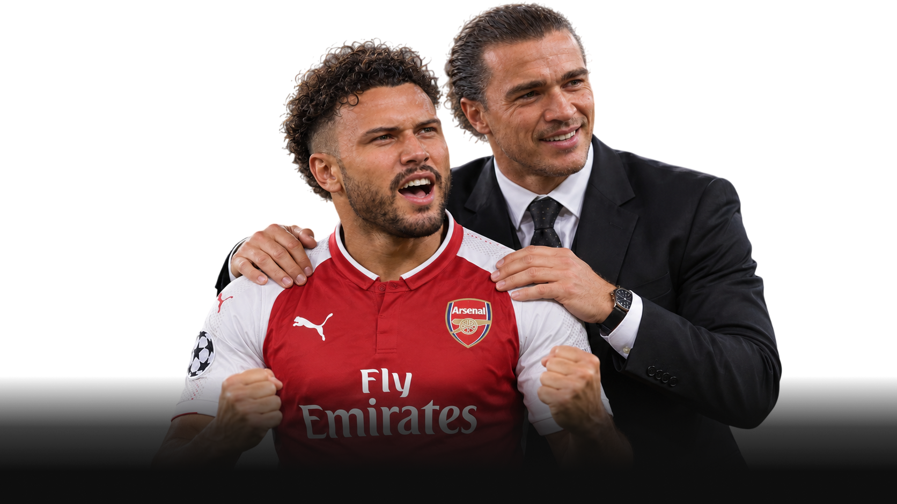
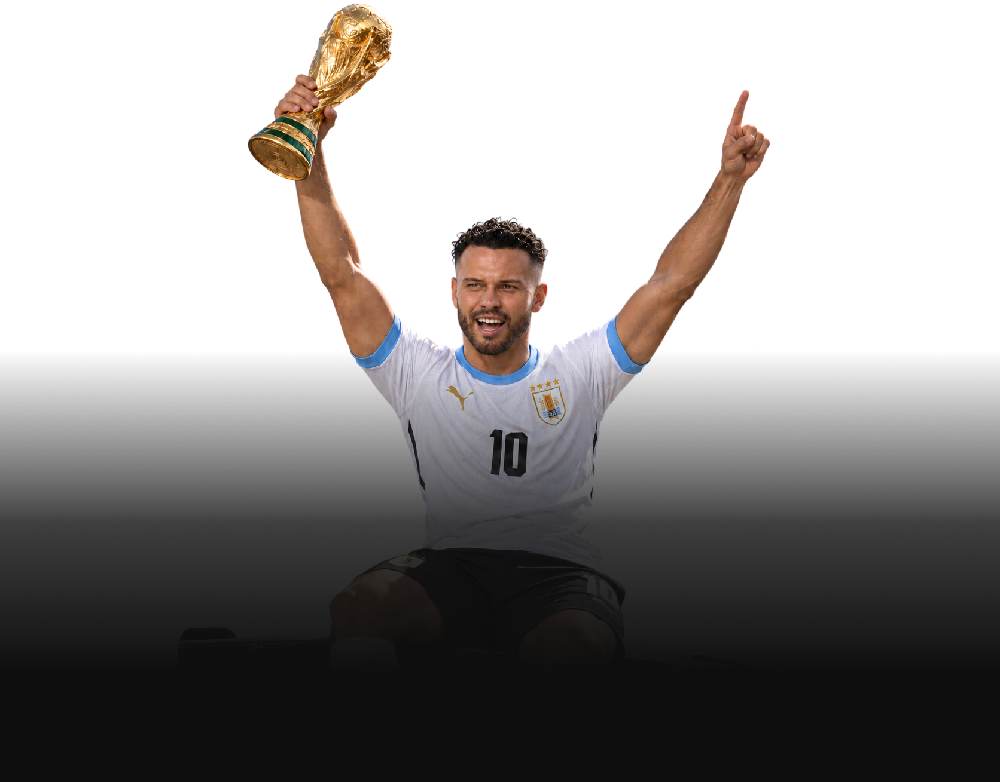
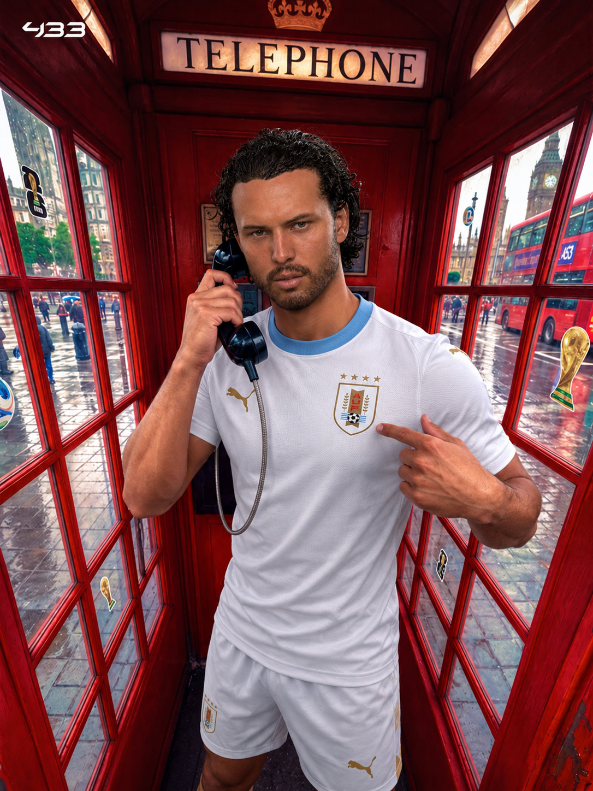
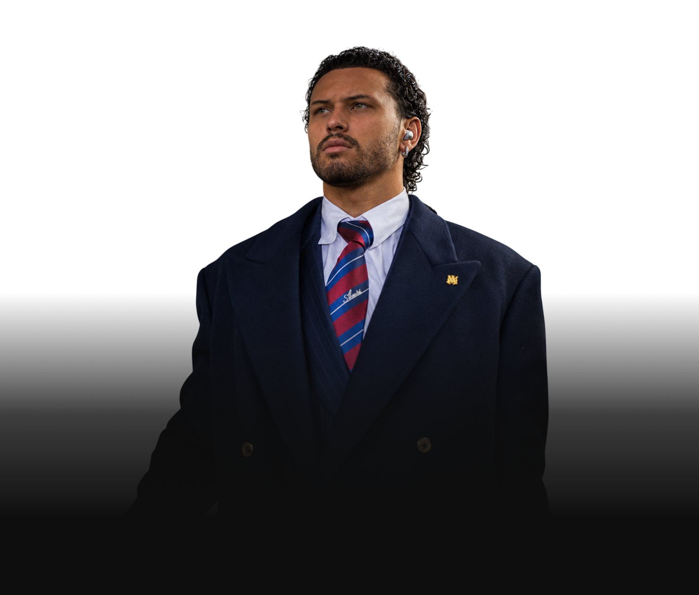
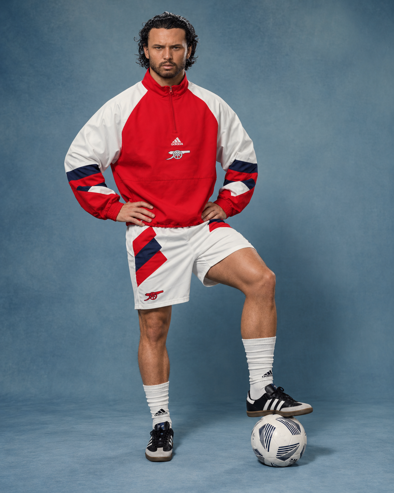

Луис Чато
Статистика
Луис Чато
MAT
650
GOALS
414
ASI
196
Наследие
Клубы


Командные клубные трофеи
Предлагаемый вариант карьеры Луиса Чато

3

2

3

2
2
1
1
1
Трофей сборной Уругвая
Предлагаемый вариант

1
Индивидуальные награды

1

1
1
2

2
1

2
3
1
1
Игровые характеристики
Класс
Один из самых техничных атакующих футболистов своего поколения. Чато сочетает исключительный дриблинг, игровое мышление и способность создавать опасность практически из ничего.
Золотой игровой стиль
Чато играет как свободный атакующий художник, способный самостоятельно менять ход матча. Он начинает преимущественно с фланга, провоцирует защитников на движение, резко меняет направление и проходит соперников благодаря технике, чувству ритма и пониманию пространства.

-
Дриблинг
98Главное оружие Чато. Он способен обыгрывать соперников один на один, менять направление движения в последний момент и находить выход даже из тесного пространства. Его техника основана не только на скорости ног, но и на способности читать движения защитника, заставлять его ошибаться и использовать эту ошибку в интересах команды.
-
Создание моментов
94Чато умеет создавать опасность там, где изначально не было свободного пространства. Он стягивает на себя защитников, открывает зоны для партнёров и находит передачи, которые разрушают оборонительную структуру. Его индивидуальные действия часто становятся началом голевых атак, даже если завершающий удар наносит другой игрок.
-
Футбольный интеллект
94Видит развитие эпизода раньше, чем оно становится очевидным для остальных. Чато понимает, когда нужно ускорить атаку, когда задержать мяч и когда отказаться от обводки ради более выгодного решения. Его техника особенно опасна потому, что подкреплена пониманием пространства, движения партнёров и поведения соперника.
-
Техника владения мячом
97Исключительный контроль мяча на высокой скорости, точные касания и способность сохранять владение под давлением. Чато легко меняет темп, работает в ограниченном пространстве и способен продолжать комбинацию даже после плотного контакта с защитником. Для него мяч — не просто инструмент атаки, а способ управлять ритмом игры.
-
Хладнокровие
91Пережив тяжёлую критику после финала «Барселоны» с «Баварией», Чато стал зрелее в решающие моменты. Он научился лучше оценивать риск, сохранять концентрацию и выбирать решение, которое необходимо команде. Его путь от талантливого, но нестабильного игрока до капитана сборной Уругвая и чемпиона мира стал доказательством его психологического роста.
Игровой стиль
Техничный вингер · Создатель игры · Атакующий художник
Луис Чато — атакующий футболист, чья игра строится на дриблинге, творчестве и способности создавать преимущество в сложных ситуациях. Действуя преимущественно на фланге, он способен смещаться в центр, обыгрывать нескольких соперников и самостоятельно доводить атаку до удара.
В начале карьеры Чато нередко выбирал эффектное решение вместо простого и надёжного. После неудачного финала с «Баварией» он столкнулся с жёсткой критикой и оказался в аренде в «Порту», где заново обрёл уверенность.
Чемпионство мира с Уругваем стало главным доказательством его взросления. Чато проявил себя не только как техничный исполнитель, но и как капитан, способный выдерживать давление, вести партнёров за собой и принимать ответственные решения. Вернувшись в «Барселону» после успешного периода в «Арсенале», он продолжил карьеру уже в статусе состоявшейся мировой звезды.
-
 98
98
-

-

-
 97
97
-
 91
91
Игровые характеристики
Класс
Один из наиболее одарённых атакующих игроков своего поколения. Воспитанник «Барселоны», звезда «Арсенала», чемпион мира с Уругваем и действующий футболист каталонского клуба.
Результативность
650 матчей, 400 голов и 196 голевых передач. Всего 596 результативных действий — в среднем 0,92 результативного действия за матч. Статистика отражает роль Чато не только как опасного завершителя атак, но и как выдающегося созидателя, способного обыгрывать защитников, создавать голевые моменты и самостоятельно решать исход матчей.
Биография

Луис Чато — El Mago, который повзрослел

Парень из Барселоны
Луис Чато вырос в футбольной среде, где талант замечали рано, но одного таланта было недостаточно, чтобы стать великим. Он прошёл академию «Барселоны» и с детства впитывал философию клуба: владение мячом, комбинационный футбол, движение без мяча и умение видеть на поле то, что другие замечают слишком поздно. Чато обладал редким даром — он мог заставить защитника поверить, что тот контролирует ситуацию, а затем одним движением лишить его всякой уверенности. Его дриблинг был не просто набором финтов. За каждым касанием скрывалось понимание пространства, ритма и намерений соперника.
Но путь из академии в основу «Барселоны» оказался сложнее, чем он представлял. В команде уже находились Эльрой Смит и Эндрю Ван Хорн — футболисты исторического масштаба, люди, чьё положение в клубе практически не подвергалось сомнению. Они не просто играли за «Барселону»: они определяли её лицо, задавали требования и забирали на себя главные роли в самых больших матчах. Рядом с ними Чато выглядел талантливым, но второстепенным игроком. Он мог удивить трибуны, заставить стадион загудеть после очередного обводящего движения, однако главным героем оставался кто-то другой. Чато рос в тени двух великих имён и всё сильнее хотел доказать, что способен выйти из неё.

Финал, который изменил его жизнь
Одним из самых болезненных вечеров в карьере Чато стал финал против «Баварии». Для «Барселоны» этот матч имел особое значение: сезон должен был стать последним клубным сезоном Эльроя Смита, и все ждали, что легенда уйдёт красиво — с большим трофеем, достойным завершением эпохи и воспоминанием, которое останется с болельщиками навсегда. Это должен был быть вечер Смита. Возможно, последний большой вечер его барселонской истории.
Но финал сложился иначе. Чато получил моменты, о которых атакующие футболисты мечтают всю жизнь. Он оказывался в ситуациях, когда ворота были открыты, а от гола отделяло одно простое решение. Однако вместо надёжного завершения он пытался исполнить эффектный удар парашютом, переиграть вратаря изящно, почти театрально. Несколько раз он выбрал красоту там, где требовалась простота. Моменты были упущены, «Барселона» проиграла, а вместе с поражением рухнула и мечта о красивом прощании Смита.
После финального свистка Чато оказался в центре бури. Пресса обвиняла его в незрелости, самоуверенности и неспособности понять цену момента. Ему припоминали каждую неудачную попытку, каждый лишний финт и каждый раз, когда он предпочёл эффектность результату. В глазах общественности он стал футболистом, который своим эгоизмом испортил последнюю главу великой истории. Не имело значения, что финал был проигран всей командой. В коллективной памяти остались прежде всего его промахи. Чато ещё предстояло научиться жить с тем, что футбольный мир способен судить человека по нескольким минутам, забывая годы его труда.

Порту — место, где он снова стал собой
«Барселона» отправила Чато в аренду в «Порту». Для одних это выглядело логичным решением: молодому футболисту требовалось игровое время. Для других — первым серьёзным шагом назад в карьере, которая совсем недавно обещала стать выдающейся. Сам Чато оказался в непривычном положении. В Испании его имя стало символом провала, и теперь ему нужно было заново заслужить доверие — не словами, не обещаниями и не красивыми движениями на тренировках, а игрой.
В «Порту» он получил то, чего ему не хватало в последние годы в Каталонии: свободу, ответственность и возможность ошибаться, не превращаясь после каждой ошибки в главную тему спортивных газет. Постепенно Чато вернул уверенность. Он снова начал обыгрывать соперников не ради аплодисментов, а ради пространства для атаки. Его финты стали частью осмысленной игры, передачи — продолжением дриблинга, а решения — доказательством футбольного интеллекта. Он превратился в одного из заметных игроков команды и помог «Порту» добраться до четвертьфинала крупного европейского турнира. Это был не конец его истории, а момент, когда он впервые по-настоящему понял: талант не исчезает после поражения, но его приходится заново заслуживать.

Арсенал и Сулейманов
После успешного периода в Португалии Чато приобрёл «Арсенал». В Лондоне он получил новый шанс — уже не как юный воспитанник, которому обещают большое будущее, а как футболист, которому предстояло доказать, что он способен приносить результат на высшем уровне. Важнейшую роль в его развитии сыграл Сулейманов. Тренер увидел в Чато не просто эффектного дриблёра, а игрока с необыкновенным чувством пространства, способного читать игру и менять её ход одним решением.
Сулейманов не стал уничтожать индивидуальность Чато ради тактической дисциплины. Напротив, он помог ему понять, когда нужно рисковать, когда следует упростить игру и как превратить личное мастерство в преимущество всей команды. Чато научился выбирать момент для обводки, чувствовать расположение партнёров и видеть продолжение атаки ещё до того, как защитник успевал среагировать. Его техника никуда не исчезла — она стала взрослее. Он по-прежнему мог унизить соперника одним движением, но теперь знал, зачем это делает.
В «Арсенале» Чато стал большой звездой и важной частью команды, которая добивалась побед на мировой арене. За время выступлений в Лондоне он выиграл три клубных чемпионата мира, два из них — вместе с Благовым. Для футболиста, которого несколько лет назад обвиняли в том, что он не способен справляться с ответственностью, эти победы стали весомым ответом. Он доказал, что умеет играть в решающих матчах, приносить пользу команде и оставаться собой, не превращая каждый эпизод в личное представление.
Уругвай вместо Испании
У Чато был выбор. Благодаря своим футбольным корням и возможностям он мог выступать за сборную Испании. Для многих игроков такой путь выглядел бы естественным: страна, в которой он вырос как футболист, академия «Барселоны», знакомая футбольная культура и возможность войти в состав одной из сильнейших сборных мира. Но Чато выбрал Уругвай.
Это решение не было самым простым и не гарантировало ему более лёгкого пути к трофеям. Испания обладала ресурсами, глубиной состава и репутацией команды, способной бороться за чемпионство на каждом крупном турнире. Уругвай же требовал от своих лидеров другого: характера, готовности терпеть, способности выдерживать давление и вести за собой команду даже тогда, когда обстоятельства складывались против неё. Чато выбрал не наиболее очевидный путь к славе, а национальную команду, с которой хотел связать собственную историю.
Перед чемпионатом мира в прессе появились громкие рассуждения: если Чато приведёт Уругвай к победе, это достижение будет стоить едва ли не двух чемпионств мира с Испанией. В этих словах была и провокация, и признание масштаба задачи. От Чато ждали, что он подтвердит свою исключительность на самом высоком уровне. Но теперь речь шла уже не о том, сможет ли он красиво обыграть защитника или заставить стадион восхищаться его техникой. Ему предстояло доказать, что он способен вести за собой целую страну.
Полуфинал против Аргентины — конец чужой мечты
На чемпионате мира Уругвай встретился с Аргентиной в полуфинале. Для футбольного мира это был матч, который должен был определить не только финалиста, но и судьбу одной из самых ожидаемых историй турнира. Многие мечтали увидеть в финале Аргентину против Нидерландов — противостояние, в котором Факундо Гарсия должен был встретиться с Эндрю Ван Хорном. Две суперзвезды, два великих имени, два футболиста, чьё соперничество давно вышло за пределы обычного сравнения статистики. Казалось, весь турнир ведёт к этой встрече.
Но у Чато и сборной Уругвая были собственные планы. Полуфинал превратился в тяжёлую битву, в которой одного таланта было недостаточно. Аргентина не собиралась уступать дорогу к финалу, а Уругвай понимал, что для выхода в решающий матч придётся выдержать давление до последней минуты. И когда судьбу встречи пришлось решать в серии пенальти, уругвайцы оказались сильнее. Аргентина выбыла, а вместе с ней исчез и финал, которого ждали болельщики по всему миру: Ван Хорн против Гарсии.
Для одних это стало футбольной трагедией — несостоявшейся встречей двух легенд. Для других — доказательством того, что чемпионат мира не обязан подчиняться чужим сценариям. Уругвай не был обязан уступать ради красивой истории, которую заранее придумали журналисты и болельщики. Чато оказался в центре этой развязки уже не как юный игрок, который однажды испортил финал собственными ошибками, а как представитель команды, которая сама лишила соперника мечты. На этот раз он не наблюдал, как история проходит мимо него. Он был одним из тех, кто её менял.

Капитан, который привёл Уругвай к вершине
Победа над Аргентиной открыла Уругваю дорогу в финал чемпионата мира против Нидерландов. И именно здесь окончательно проявился другой Луис Чато. На протяжении карьеры его воспринимали как художника, способного превратить футбол в искусство, но сомневались, сможет ли он выдержать тяжесть настоящей ответственности. Его талант никто не ставил под сомнение. Под сомнением оставалось другое: можно ли доверить ему команду, когда цена ошибки становится огромной?
На чемпионате мира Чато ответил на этот вопрос не одним финтом и не одним красивым голом. Он проявил себя как лидер и капитан — футболист, на которого можно положиться в трудную минуту, который не прячется от давления и способен повести партнёров за собой. Он стал надёжнее, собраннее и взрослее. Его лидерство не означало, что он перестал быть артистом с мячом. Оно означало, что он научился понимать: иногда команде требуется не чудо, а правильное решение; не эффектный жест, а выдержка; не попытка стать героем эпизода, а готовность отвечать за общий результат.
В финале Уругвай встретился с Нидерландами и одержал победу, став чемпионом мира. Для Чато это был момент, который изменил смысл всей его карьеры. Он выбрал страну, от которой не ждал лёгкой дороги, прошёл через тяжёлый полуфинал, лишил мир ожидаемого финала Гарсии и Ван Хорна, а затем помог Уругваю добраться до вершины. Он больше не был тем мальчиком, которому после поражения от «Баварии» не доверяли решающие моменты. Теперь перед миром стоял капитан сборной — человек, который доказал, что способен не только восхищать, но и решать.
Именно поэтому слова прессы о том, что чемпионство мира с Уругваем может стоить двух титулов с Испанией, обрели новый смысл. Чато не просто выиграл главный турнир в футболке другой страны. Он сделал это с командой, которую сам выбрал, и в роли, к которой долго шёл. Он доказал, что его характер больше не ограничивается желанием играть красиво. Он научился побеждать, когда красота требует дисциплины, а талант — ответственности.

Не только чемпион мира — уругваец по выбору
После чемпионата мира выбор Чато не закончился. Он продолжил представлять Уругвай и выбрал для себя не только мундиаль, но и Кубок Америки. Для него национальная команда не была временным проектом, созданным ради одного большого турнира. Его решение имело значение за пределами чемпионства: он хотел быть частью уругвайского футбола, его традиций, его борьбы и его будущего.
Чато мог бы выбрать Испанию и построить международную карьеру в системе, где его футбольные качества были бы понятны с первых дней. Но он выбрал Уругвай и принял всё, что приходило вместе с этим выбором. Он стал капитаном не потому, что его имя было громче остальных, а потому, что сумел доказать партнёрам свою надёжность. Он перестал быть лишь игроком, от которого ждут волшебства. Он стал человеком, которому доверяют команду.
Для уругвайских болельщиков это сделало его историю особенной. Чато не был футболистом, который просто появился в национальной форме перед крупным турниром, чтобы затем вернуться к клубным делам. Он выбрал эту страну, защищал её цвета и разделил с ней величайший триумф. Его путь показал, что национальная принадлежность в футболе может быть не только вопросом рождения или воспитания, но и осознанным решением — выбором, за который человек готов отвечать на поле.

Возвращение домой
После периода в «Арсенале» Чато вернулся в «Барселону». Это возвращение стало важной главой его карьеры: он снова оказался в клубе, где когда-то начинался его путь, где он вырос как футболист и где пережил один из самых болезненных ударов своей жизни. Но теперь он возвращался не тем юным игроком, который пытался доказать, что достоин находиться рядом с великими. За его плечами были европейские испытания, большие клубные трофеи, три победы на клубном чемпионате мира и чемпионство мира со сборной Уругвая в роли капитана.
В прошлом «Барселона» была для него местом, где он не мог выйти из тени Смита и Ван Хорна. Теперь он вернулся туда человеком, который прошёл собственный путь и больше не нуждался в чужом признании, чтобы понимать свою ценность. Он знал, что такое провал, публичное осуждение и потеря уверенности. Знал и то, как заново собрать себя, измениться и вернуться сильнее. Его возвращение было не попыткой переписать прошлое и не просьбой простить ошибки. Это было возвращение домой — в клуб, который стал частью его характера, даже когда казалось, что он больше не сможет там остаться.
И история Чато ещё не завершена. Он продолжает профессиональную карьеру и остаётся действующим игроком «Барселоны». Его биография не заканчивается трофеем, финалом или прощальным матчем. Впереди у него всё ещё есть новые сезоны, новые испытания и возможность оставить после себя ещё более значительное наследие. Теперь он возвращается на поле не как обещание будущего, которое необходимо проверить, а как состоявшийся футболист, уже знающий цену поражения и победы.

Волшебник
Луис Чато всегда был волшебником. Он умел менять темп игры, читать движения соперника, находить свободное пространство и превращать обводку в оружие. Но в начале карьеры ему казалось, что величие заключается в том, чтобы удивлять. В финале против «Баварии» он выбрал эффектность вместо простого решения и заплатил за это репутацией. В «Порту» он заново обрёл уверенность, в «Арсенале» научился соединять талант с дисциплиной, а в сборной Уругвая доказал, что способен выдержать ответственность, которую не измерить количеством финтов или аплодисментов.
Чато больше не нужно доказывать, что он умеет играть красиво. Это было понятно с самого начала. Его настоящая победа заключается в другом: он доказал, что способен вести команду, принимать решения под давлением и становиться надёжным именно тогда, когда от него ждут самого многого. В Уругвае он превратился из талантливого футболиста в капитана чемпионов мира. А вернувшись в «Барселону», он принёс с собой не только трофеи, но и опыт человека, который однажды оказался виноватым в чужой трагедии, пережил осуждение и сумел построить собственную историю.
Когда-то Чато был мальчиком, который пытался выйти из тени двух легенд. Потом он стал игроком, которого обвиняли в том, что он не оправдал свой талант. Теперь он — чемпион мира, капитан Уругвая и действующий футболист «Барселоны». Его история ещё продолжается, но главное уже ясно: Луис Чато научился не только рисовать великий футбол. Он научился отвечать за него.
Фотографии